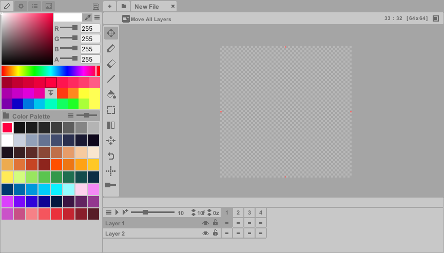
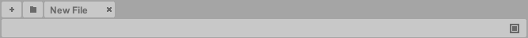
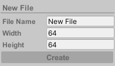

Welcome
Pixelverse is a pixel art editor built specifically for Unity, designed to simplify pixel art creation and streamline Unity workflows. It combines standard pixel art tools with experimental features like Inverse Kinematics to accelerate sprite creation. The editor supports animation through the Timeline, along with importing/exporting sprite sheets, GIFs, and individual frames. Keyboard shortcuts are available for efficient editing.
Heads up: Pixelverse is still under active development. While the current version includes all core tools, we're steadily expanding its capabilities. Watch for new features in upcoming releases!

Considerations
Performance
This editor is optimized for pixel art workflows (128x128 or lower resolutions). While it supports higher resolutions, using very large canvas sizes may cause performance slowdowns in Unity, depending on your system specifications.
Undo Functionality
The undo functionality currently covers basic operations but does not include actions involving:
Layer or Frame creation/deletion
Layer merging
Transform controls
Palette color instance modifications
For the time being, there is also no Redo functionality.
Saving
Unlike other pixel art editors, Pixelverse operates within Unity, making pixel art saving a priority due to Unity's data serialization. To prevent data loss, Pixelverse automatically saves your work frequently.
Key Triggers for Auto-Save:
- Entering Play Mode
- Unity out of focus
- Compiling a script
- Timed intervals
- Exiting Unity
Best Practices:
- To experiment safely, always create a copy of your file
- Use undo actions promptly if you make unwanted changes
For manual saves, click the save icon in the upper-left menu. You may experience occasional slowdowns during saving.
Getting Started
Inside Unity, go to Window > Pixelverse to open the editor window.

Create new file:
- Click the Add button (+) in the top menu bar.
- If no files exists, a prompt will appear to create one.

Width and Height are in pixels. New Pixelverse documents are called Pixelfiles – which are scriptable objects stored in Pixelverse/Files. These files contain all the pixel data along with layer and frame metadata. Note that Pixelfiles are different from your exported pixel images, which can be saved/exported into any folder within Unity (see the Export editor).
Open existing file:
- Click the Folder button to browse and select files.